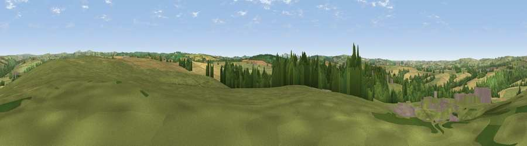

Viewpoint near St Mabyn
#20749 in England · top 41% of its area beats it · near St MabynThe view, rendered

A 360° render of this exact spot computed from the terrain model, tree cover and land cover — summer colours, afternoon light, calibrated against photographs of famous viewpoints. Real trees, hedges and buildings will differ in detail.
The panorama
Grey silhouette: terrain skyline in each direction (720 bearings, Earth curvature and refraction included). Dashed green: skyline with trees (+15 m) and buildings (+8 m) as obstacles. Blue strip: how far the ground is visible on each bearing.
Where the view opens
Wedge length = distance to the farthest visible ground on that bearing (vegetation-aware). Rings at 10, 25 and 50 km.
What fills the view
57% grassland · 24% cropland · 15% woodland · 3% built-up
Angular shares of the visible panorama (visual magnitude), not map area. Landscape diversity 0.47 (0–1 Shannon).
Key numbers
More beautiful places nearby
The staircase of upgrades: each row has a higher view potential than everything closer. Driving times are estimates from straight-line distance, calibrated against real road routing — check an actual route before setting out.
| Place | Direction | Drive | Score |
|---|---|---|---|
| Viewpoint near Mount Charles | SSW · 4 km | ~9 min | 52.7 |
| Viewpoint near St Tudy | N · 4 km | ~10 min | 68.5 |
| St Endellion Hill | NW · 6 km | ~13 min | 75.5 |
| Viewpoint near Port Isaac | NW · 7 km | ~15 min | 77.8 |
| Viewpoint near Port Isaac | NNW · 7 km | ~15 min | 79.7 |
| Viewpoint near Boscastle | NNE · 16 km | ~29 min | 82.0 |
| Viewpoint near Stenalees | SSW · 17 km | ~29 min | 88.0 |
| Viewpoint near Crackington Haven | NNE · 22 km | ~37 min | 88.1 |
50.52873, -4.76080 · source: screening · position refined by local search. Computed location — check access rights before visiting.